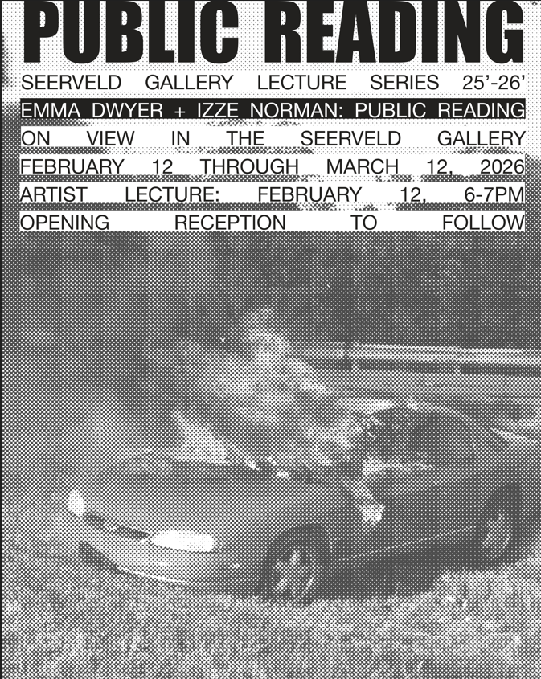

Emma Dwyer and Izze Norman: Public Reading
The Seerveld Gallery ‘25-‘26 Lecture Series welcomes graphic designers and publishers Emma Dwyer and Izze Norman on the evening of February 12, followed by the opening reception of their exhibition Public Reading at Trinity’s Seerveld Gallery. Join us for a conversation between Dwyer and Norman regarding their exhibition and practice from 6-7pm in the Seerveld Gallery, with the reception to follow from 7-8pm.
Emma Dwyer is a graphic designer whose work moves between research, archiving, image making, and publishing. She currently teaches in the School of Design at University of Illinois Chicago, where she also works as the Archives Assistant at the Architecture and Design Open Archive. She holds an MDes in Graphic Design from University of Illinois Chicago.
Izze Norman’s research explores the forms that desire can take in a capitalist society through experimental methods, content, image making, and publishing. They are interested in exploring the influences of personal identity within the form of graphic design. They hold a BFA in Visual Communications from Northern Illinois University and an MDes in Graphic Design from University of Illinois Chicago. Izze is an adjunct professor of graphic design at Northeastern Illinois University and Loyola University Chicago.
Together, Emma and Izze publish as TOMATO TOMATO TOMATO/Short Leash Editions, which explores themes including the ways in which power and meaning are produced, fantasy as a means of expression, and the desire to be ungovernable via Risograph-printed editions and ephemera. TOMATO TOMATO TOMATO/Short Leash Editions has exhibited work at the Detroit Art Book Fair, Madison Print and Resist, the Chicago Printers Guild Publisher’s Fair, ZINEmercado, Zine Not Dead Fest, and the Pittsburgh Art Book Fair.
For more information, contact Seerveld Gallery Coordinator, Raeann Van Zee, at rvanzee@trnty.edu